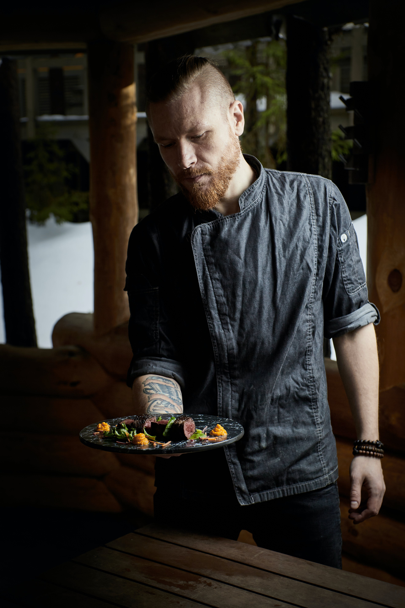
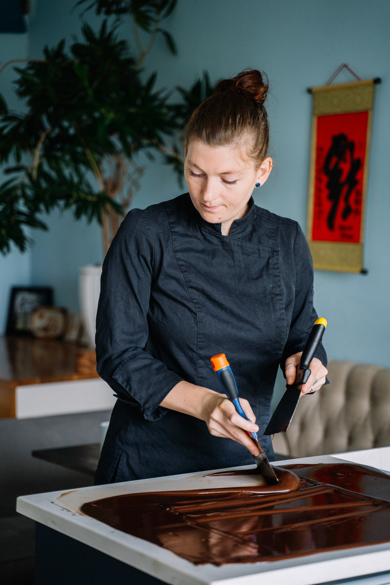
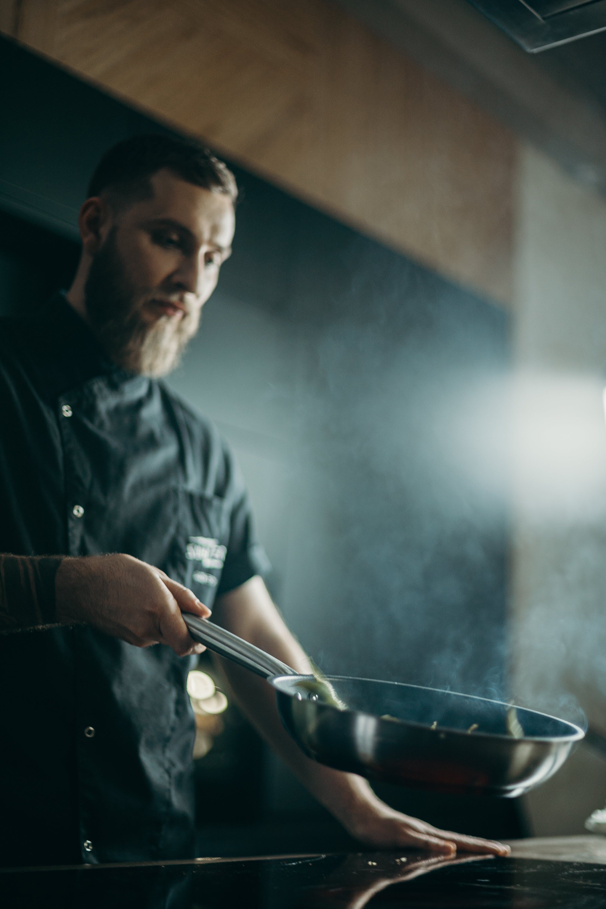
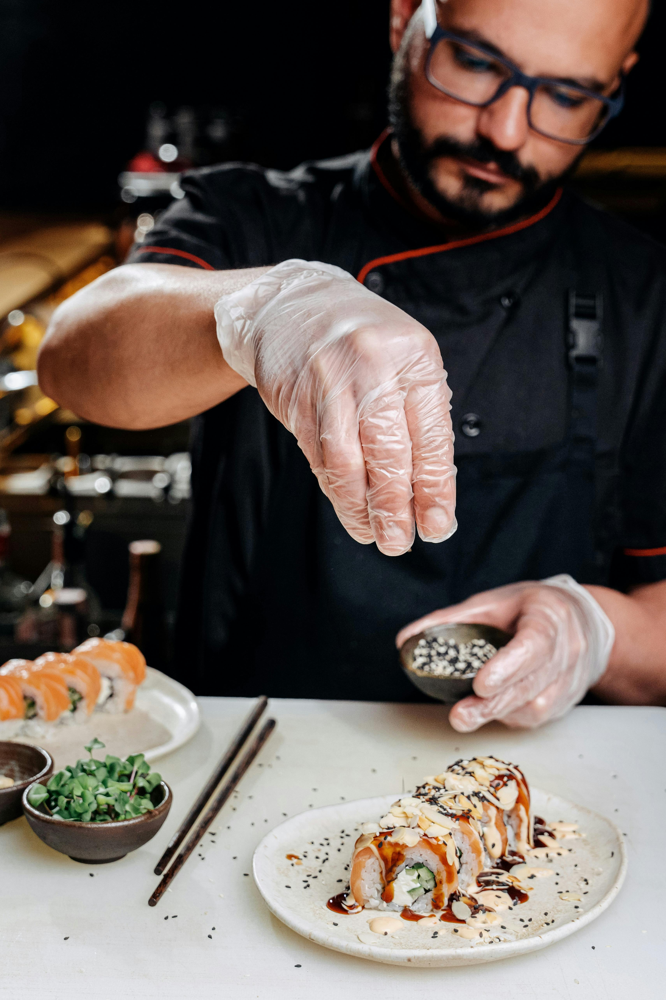

Brief history of our resturant
This resturant was founded in 1995, by Jason Smith.
Jason Smith had travelled the globe, from England to India, trying all sorts of cuisines, in hopes of owning his own resturant one day and combining his knowlege.
Jason Smith's passion for cooking came from his grandma, who first taught him to cook and sparked a fire in him which never died down.
Jason Smith loved to fuse different cuisines, to create new recipies and hence why his resturant is focused on fusing different
cuisines and hence through his creativity and hard work has managed to gain 3 michiline stars.
 
Head Chef
Sous Chef
Chef Charles
Chef Adam
Chef James
Chef Ryan
Event Sechdule
- Wednesday: Classical Music 7pm-9pm
- Friday: Dance 8pm-9pm
- Saturday: Standup Comedy 7pm-9pm